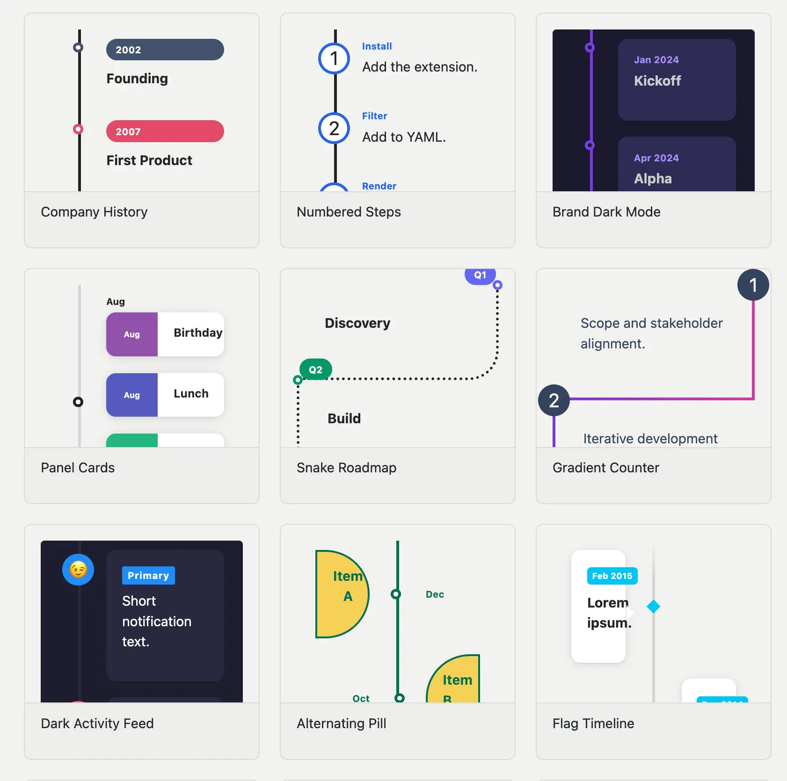

I’m happy to announce quarto-timeline, a Quarto extension for creating styled timelines in HTML documents and RevealJS presentations.
Installation
quarto add EmilHvitfeldt/quarto-timelineThen add the filter to your document YAML:
filters:
- timelineWriting timelines
Timelines are written as nested divs. The outer .timeline div sets the layout; each inner .event div is one entry, with a data-label attribute for the marker text.
::: {.timeline}
::: {.event data-label="2020"}
**Project Started**
Initial concept and planning phase.
:::
::: {.event data-label="2021"}
**First Release**
Launched version 1.0 to early users.
:::
::: {.event data-label="2022"}
**Major Update**
Rewrote core engine for performance.
:::
:::Project Started Initial concept and planning phase.
First Release Launched version 1.0 to early users.
Major Update Rewrote core engine for performance.
Layouts
There are a number of didferent ways we can change how the timeline looks. the first one is by changing the layout You can switch between the layouts by adding classes to the .timeline divs.
Below is a .vertical timeline.
Project Started — Initial concept and planning phase.
First Release — Launched version 1.0 to early users.
Major Update — Rewrote core engine for performance.
Scale Up — Reached 1 million users worldwide.
And a .vertical-alt timeline.
Project Started Initial concept and planning phase.
First Release Launched version 1.0 to early users.
Major Update Rewrote core engine for performance.
Scale Up Reached 1 million users worldwide.
Multiple events sharing the same data-label are automatically grouped under a single marker.
Project Started Initial concept and planning phase.
Team Formed Hired first three engineers.
First Release Launched version 1.0 to early users.
Major Update Rewrote core engine for performance.
An event with no content with just a data-label, will still appear on the timeline. Allowing you to indicate gaps more easily.
Project Started — Initial concept and planning phase.
First Release — Launched version 1.0 to early users.
Scale Up — Reached 1 million users worldwide.
Customization
Visual properties are exposed as CSS custom properties on .timeline, so you can override them inline or document-wide. The full reference is on the customization page.
There are modifier classes for common variations. Here is .tl-card with .tl-label-banner on a vertical alternating layout:
Overriding CSS variables inline:
::: {.timeline .vertical-alt .tl-card .tl-label-banner style="--tl-color-line: #3b82f6; --tl-color-dot: #3b82f6; --tl-color-label: #3b82f6;"}
...
:::RevealJS fragments
In RevealJS presentations, add .fragment to individual .event divs to reveal them one at a time as you advance. The fragments page covers all the options, including two pan modes (.fragment-slide and .fragment-conveyor) for timelines with more events than fit on a slide.
Gallery and docs
The full documentation lives at https://emilhvitfeldt.github.io/quarto-timeline/, including a gallery of styled examples showing what’s possible with the built-in modifier classes and CSS variables.
